import numpy as np
import matplotlib.pyplot as plt
import pandas as pd
import torch기계학습 특강 (4주차) 9월28일 [회귀분석(2)–step1~4, step1의 다른표현, step4의 다른표현, 로지스틱 intro]
imports
numpy, torch (선택학습)
numpy, torch는 엄청 비슷해요
- torch.tensor() = np.array() 처럼 생각해도 무방
np.array([1,2,3]), torch.tensor([1,2,3])(array([1, 2, 3]), tensor([1, 2, 3]))- 소수점의 정밀도에서 차이가 있음 (torch가 좀 더 쪼잔함)
np.array([3.123456789])array([3.12345679])torch.tensor([3.123456789])tensor([3.1235])(서연필기)tensor는 gpu에 저장하기 때문에 메모리 아끼기 위해 정밀도가 낮은 경향이 있다.
- 기본적인 numpy 문법은 np 대신에 torch를 써도 무방 // 완전 같지는 않음
np.arange(10), torch.arange(10)(array([0, 1, 2, 3, 4, 5, 6, 7, 8, 9]), tensor([0, 1, 2, 3, 4, 5, 6, 7, 8, 9]))np.linspace(0,1,10), torch.linspace(0,1,10)(array([0. , 0.11111111, 0.22222222, 0.33333333, 0.44444444,
0.55555556, 0.66666667, 0.77777778, 0.88888889, 1. ]),
tensor([0.0000, 0.1111, 0.2222, 0.3333, 0.4444, 0.5556, 0.6667, 0.7778, 0.8889,
1.0000]))np.random.randn(10)array([-0.90388568, 0.51779102, 0.73699131, -0.88030899, 1.71668715,
-0.70735651, -0.29752154, 1.10432159, 0.23592126, 0.91669421])torch.randn(10)tensor([ 0.6896, 1.8534, -0.3807, 1.3676, 0.0515, 0.4350, 0.6051, -1.5075,
0.1474, 0.3098])length \(n\) vector, \(n \times 1\) col-vector, \(1 \times n\) row-vector
브로드캐스팅 길이가 3인 벡터와 1인벡터를 더하면 오류 뜨지 않고 더해줌
- 길이가 3인 벡터 선언방법
a = torch.tensor([1,2,3])
a.shapetorch.Size([3])- 3x1 col-vec 선언방법
(방법1)
a = torch.tensor([[1],[2],[3]])
a.shapetorch.Size([3, 1])(방법2)
a = torch.tensor([1,2,3]).reshape(3,1)
a.shapetorch.Size([3, 1])- 1x3 row-vec 선언방법
(방법1)
a = torch.tensor([[1,2,3]])
a.shapetorch.Size([1, 3])(방법2)
a = torch.tensor([1,2,3]).reshape(1,3)
a.shapetorch.Size([1, 3])- 3x1 col-vec 선언방법, 1x3 row-vec 선언방법에서 [[1],[2],[3]] 혹은 [[1,2,3]] 와 같은 표현이 이해안되면 아래링크로 가셔서
https://guebin.github.io/STBDA2022/2022/03/14/(2주차)-3월14일.html
첫번째 동영상 12:15 - 22:45 에 해당하는 분량을 학습하시길 바랍니다.
torch의 dtype
- 기본적으로 torch는 소수점으로 저장되면 dtype=torch.float32 가 된다. (이걸로 맞추는게 편리함)
tsr = torch.tensor([1.23,2.34])
tsrtensor([1.2300, 2.3400])tsr.dtypetorch.float32- 정수로 선언하더라도 dtype를 torch.float32로 바꾸는게 유리함
(안 좋은 선언예시)
tsr = torch.tensor([1,2])
tsr tensor([1, 2])tsr.dtypetorch.int64(좋은 선언예시1)
tsr = torch.tensor([1,2],dtype=torch.float32)
tsr tensor([1., 2.])tsr.dtypetorch.float32(좋은 선언예시2)
tsr = torch.tensor([1,2.0])
tsr tensor([1., 2.])tsr.dtypetorch.float32(사실 int로 선언해도 나중에 float으로 바꾸면 큰 문제없음)
tsr = torch.tensor([1,2]).float()
tsrtensor([1., 2.])tsr.dtypetorch.float32- 왜 정수만으로 torch.tensor를 만들때에도 torch.float32로 바꾸는게 유리할까? \(\to\) torch.tensor끼리의 연산에서 문제가 될 수 있음
별 문제 없을수도 있지만
torch.tensor([1,2])-torch.tensor([1.0,2.0]) tensor([0., 0.])아래와 같이 에러가 날수도 있다
(에러1)
torch.tensor([[1.0,0.0],[0.0,1.0]]) @ torch.tensor([[1],[2]]) RuntimeError: expected scalar type Float but found Long(에러2)
torch.tensor([[1,0],[0,1]]) @ torch.tensor([[1.0],[2.0]])RuntimeError: expected scalar type Long but found Float(해결1) 둘다 정수로 통일
torch.tensor([[1,0],[0,1]]) @ torch.tensor([[1],[2]])tensor([[1],
[2]])(해결2) 둘다 소수로 통일 <– 더 좋은 방법임
torch.tensor([[1.0,0.0],[0.0,1.0]]) @ torch.tensor([[1.0],[2.0]])tensor([[1.],
[2.]])shape of vector
- 행렬곱셈에 대한 shape 조심
A = torch.tensor([[2.00,0.00],[0.00,3.00]])
b1 = torch.tensor([[-1.0,-5.0]])
b2 = torch.tensor([[-1.0],[-5.0]])
b3 = torch.tensor([-1.0,-5.0])A.shape,b1.shape,b2.shape,b3.shape(torch.Size([2, 2]), torch.Size([1, 2]), torch.Size([2, 1]), torch.Size([2]))- A@b1: 계산불가, b1@A: 계산가능
A@b1RuntimeError: mat1 and mat2 shapes cannot be multiplied (2x2 and 1x2)b1@Atensor([[ -2., -15.]])- A@b2: 계산가능, b2@A: 계산불가
A@b2tensor([[ -2.],
[-15.]])b2@ARuntimeError: mat1 and mat2 shapes cannot be multiplied (2x1 and 2x2)- A@b3: 계산가능, b3@A: 계산가능
(A@b3).shape ## b3를 마치 col-vec 처럼 해석torch.Size([2])(b3@A).shape ## b3를 마지 row-vec 처럼 해석torch.Size([2])- 뒤에 놓으면 b3를 컬럼벡터로 인식
- 앞에 놓으면 b3를 로우벡터로 인식
- 브로드캐스팅
a = torch.tensor([1,2,3])
a - 1tensor([0, 1, 2])b = torch.tensor([[1],[2],[3]])
b - 1tensor([[0],
[1],
[2]])계산이 되지 않아야 맞지 않나
a - b # a를 row-vec 로 해석tensor([[ 0, 1, 2],
[-1, 0, 1],
[-2, -1, 0]])잘못 계싼할 수 있으니 dimension 명시해주자
Review: step1~4
df = pd.read_csv("https://raw.githubusercontent.com/guebin/DL2022/master/_notebooks/2022-09-22-regression.csv")
df| x | y | |
|---|---|---|
| 0 | -2.482113 | -8.542024 |
| 1 | -2.362146 | -6.576713 |
| 2 | -1.997295 | -5.949576 |
| 3 | -1.623936 | -4.479364 |
| 4 | -1.479192 | -4.251570 |
| ... | ... | ... |
| 95 | 2.244400 | 10.325987 |
| 96 | 2.393501 | 12.266493 |
| 97 | 2.605604 | 13.098280 |
| 98 | 2.605658 | 12.546793 |
| 99 | 2.663240 | 13.834002 |
100 rows × 2 columns
plt.plot(df.x, df.y,'o')torch.tensor(df.x)tensor([-2.4821, -2.3621, -1.9973, -1.6239, -1.4792, -1.4635, -1.4509, -1.4435,
-1.3722, -1.3079, -1.1904, -1.1092, -1.1054, -1.0875, -0.9469, -0.9319,
-0.8643, -0.7858, -0.7549, -0.7421, -0.6948, -0.6103, -0.5830, -0.5621,
-0.5506, -0.5058, -0.4806, -0.4738, -0.4710, -0.4676, -0.3874, -0.3719,
-0.3688, -0.3159, -0.2775, -0.2772, -0.2734, -0.2721, -0.2668, -0.2155,
-0.2000, -0.1816, -0.1708, -0.1565, -0.1448, -0.1361, -0.1057, -0.0603,
-0.0559, -0.0214, 0.0655, 0.0684, 0.1195, 0.1420, 0.1521, 0.1568,
0.2646, 0.2656, 0.3157, 0.3220, 0.3461, 0.3984, 0.4190, 0.5443,
0.5579, 0.5913, 0.6148, 0.6469, 0.6469, 0.6523, 0.6674, 0.7059,
0.7141, 0.7822, 0.8154, 0.8668, 0.9291, 0.9804, 0.9853, 0.9941,
1.0376, 1.0393, 1.0697, 1.1024, 1.1126, 1.1532, 1.2289, 1.3403,
1.3494, 1.4279, 1.4994, 1.5031, 1.5437, 1.6789, 2.0832, 2.2444,
2.3935, 2.6056, 2.6057, 2.6632], dtype=torch.float64)(서연필기)
float64 숫자 정밀 저장
float32이면 dtype=torch.float64)꼬리표가 붙지 않음
_trt = torch.tensor(df.x).float()
_trt = torch.tensor(df.x,dtype=float30)같은 역할, 메모리 적게 쓰기 위해 타입 바꿔주자
x= torch.tensor(df.x,dtype=torch.float32).reshape(100,1)컬럼형식으로 받아주기 위해 변경
x= torch.tensor(df.x,dtype=torch.float32).reshape(100,1)
y= torch.tensor(df.y,dtype=torch.float32).reshape(100,1)
_1= torch.ones([100,1])
X = torch.concat([_1,x],axis=1)torch.ones([100,1])
torch.tensor([[1]*100,x]).T같은 셋
What = torch.tensor([[-5.0],[10.0]],requires_grad=True)
Whattensor([[-5.],
[10.]], requires_grad=True)requires_grad=True reshape 미분 가능 옵션 주기 전에 shape 정해주자
plt.plot(x,y,'o')
#plt.plot(x,-5+10*x,'--')
plt.plot(x,X@What.data,'--')ver1: loss = sum of squares error
alpha = 1/1000
What = torch.tensor([[-5.0],[10.0]],requires_grad=True)
for epoc in range(30):
# step1: yhat
yhat = X@What
# step2: loss
loss = torch.sum((y-yhat)**2)
# step3: 미분
loss.backward()
# step4: update
What.data = What.data - alpha * What.grad
What.grad = None # Whattensor([[2.4290],
[4.0144]], requires_grad=True)plt.plot(x,y,'o')
plt.plot(x,X@What.data,'--')
- note: 왜 What = What - alpha*What.grad 는 안되는지?
Whattensor([[2.4290],
[4.0144]], requires_grad=True)What.datatensor([[2.4290],
[4.0144]])What과 What.data는 달라요, requires_grad=True 미분 가능 꼬리표가 붙지 않기 때문!
ver2: loss = mean squared error = MSE
alpha = 1/10
What = torch.tensor([[-5.0],[10.0]],requires_grad=True)
for epoc in range(30):
# step1: yhat
yhat = X@What
# step2: loss
loss = torch.mean((y-yhat)**2)
# step3: 미분
loss.backward()
# step4: update
What.data = What.data - alpha * What.grad
What.grad = None # Whattensor([[2.4290],
[4.0144]], requires_grad=True)(서연필기)mean 정의 - 데이터를 더 효율적으로 학습 가능, 데이터 수만큼 안 해도 돼, 계산 덜 해도 돼
step1의 다른버전 – net 설계만
ver1: net = torch.nn.Linear(1,1,bias=True)
torch.nn.Linear?Init signature: torch.nn.Linear( in_features: int, out_features: int, bias: bool = True, device=None, dtype=None, ) -> None Docstring: Applies a linear transformation to the incoming data: :math:`y = xA^T + b` This module supports :ref:`TensorFloat32<tf32_on_ampere>`. Args: in_features: size of each input sample out_features: size of each output sample bias: If set to ``False``, the layer will not learn an additive bias. Default: ``True`` Shape: - Input: :math:`(*, H_{in})` where :math:`*` means any number of dimensions including none and :math:`H_{in} = \text{in\_features}`. - Output: :math:`(*, H_{out})` where all but the last dimension are the same shape as the input and :math:`H_{out} = \text{out\_features}`. Attributes: weight: the learnable weights of the module of shape :math:`(\text{out\_features}, \text{in\_features})`. The values are initialized from :math:`\mathcal{U}(-\sqrt{k}, \sqrt{k})`, where :math:`k = \frac{1}{\text{in\_features}}` bias: the learnable bias of the module of shape :math:`(\text{out\_features})`. If :attr:`bias` is ``True``, the values are initialized from :math:`\mathcal{U}(-\sqrt{k}, \sqrt{k})` where :math:`k = \frac{1}{\text{in\_features}}` Examples:: >>> m = nn.Linear(20, 30) >>> input = torch.randn(128, 20) >>> output = m(input) >>> print(output.size()) torch.Size([128, 30]) Init docstring: Initializes internal Module state, shared by both nn.Module and ScriptModule. File: ~/anaconda3/envs/csy/lib/python3.8/site-packages/torch/nn/modules/linear.py Type: type Subclasses: NonDynamicallyQuantizableLinear, LazyLinear, Linear, Linear
input 잡는 법 - x의 컬럼 부분을 input이라고 생각하자
x.shapetorch.Size([100, 1])output 잡는 법 - y의 컬럼 부분을 output이라고 생각하자
y.shapetorch.Size([100, 1])_net = torch.nn.Linear(in_features=1, out_features=1, bias=True) _net(x).shapetorch.Size([100, 1])_net.bias # w0Parameter containing:
tensor([-0.1281], requires_grad=True)_net.weight # w1Parameter containing:
tensor([[0.1433]], requires_grad=True)torch.manual_seed(43052)
net = torch.nn.Linear(in_features=1, out_features=1, bias=True) net.bias, net.weight(Parameter containing:
tensor([-0.8470], requires_grad=True),
Parameter containing:
tensor([[-0.3467]], requires_grad=True))plt.plot(x,y,'o')
plt.plot(x,net(x).data,'--')
w0hat = -0.847
w1hat = -0.3467
plt.plot(x,w0hat+w1hat*x,'--')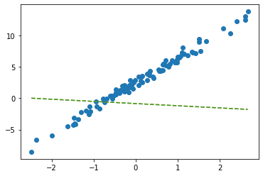
출력결과 같음을 확인
- net에서 \(\hat{w}_0, \hat{w}_1\) 의 값은?
net.weight # w1 Parameter containing:
tensor([[-0.3467]], requires_grad=True)net.bias # w0 Parameter containing:
tensor([-0.8470], requires_grad=True)_yhat = -0.8470 + -0.3467*x plt.plot(x,y,'o')
plt.plot(x, _yhat,'--')
plt.plot(x,net(x).data,'-.')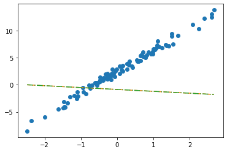
- 수식표현: \(\hat{y}_i = \hat{w}_0 + \hat{w}_1 x_i = \hat{b} + \hat{w}x_i = -0.8470 + -0.3467 x_i\) for all \(i=1,2,\dots,100\).
ver2: net = torch.nn.Linear(2,1,bias=False)
- 입력이 x가 아닌 X를 넣고 싶다면? (보통 잘 안하긴 해요, 왜? bias=False로 주는게 귀찮거든요) - X는 바이어스가 고려된 상황
net(X) ## 그대로 쓰면 당연히 에러RuntimeError: mat1 and mat2 shapes cannot be multiplied (100x2 and 1x1)torch.manual_seed(43052)
net = torch.nn.Linear(in_features=2, out_features=1, bias=False) net(X).shapetorch.Size([100, 1])net.weightParameter containing:
tensor([[-0.2451, -0.5989]], requires_grad=True)위에 \(w_0,w_1\) 순
net.biasbias 없음을 확인
plt.plot(x,y,'o')
plt.plot(x,net(X).data, '--')
plt.plot(x,X@torch.tensor([[-0.2451],[-0.5989]]), '-.')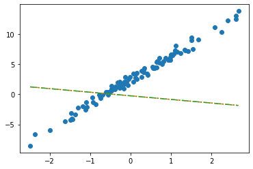
- 수식표현: \(\hat{\bf y} = {\bf X} {\bf \hat W} = \begin{bmatrix} 1 & x_1 \\ 1 & x_2 \\ \dots & \dots \\ 1 & x_{100} \end{bmatrix} \begin{bmatrix} -0.2451 \\ -0.5989 \end{bmatrix}\)
잘못된사용1
_x = x.reshape(-1)_xtensor([-2.4821, -2.3621, -1.9973, -1.6239, -1.4792, -1.4635, -1.4509, -1.4435,
-1.3722, -1.3079, -1.1904, -1.1092, -1.1054, -1.0875, -0.9469, -0.9319,
-0.8643, -0.7858, -0.7549, -0.7421, -0.6948, -0.6103, -0.5830, -0.5621,
-0.5506, -0.5058, -0.4806, -0.4738, -0.4710, -0.4676, -0.3874, -0.3719,
-0.3688, -0.3159, -0.2775, -0.2772, -0.2734, -0.2721, -0.2668, -0.2155,
-0.2000, -0.1816, -0.1708, -0.1565, -0.1448, -0.1361, -0.1057, -0.0603,
-0.0559, -0.0214, 0.0655, 0.0684, 0.1195, 0.1420, 0.1521, 0.1568,
0.2646, 0.2656, 0.3157, 0.3220, 0.3461, 0.3984, 0.4190, 0.5443,
0.5579, 0.5913, 0.6148, 0.6469, 0.6469, 0.6523, 0.6674, 0.7059,
0.7141, 0.7822, 0.8154, 0.8668, 0.9291, 0.9804, 0.9853, 0.9941,
1.0376, 1.0393, 1.0697, 1.1024, 1.1126, 1.1532, 1.2289, 1.3403,
1.3494, 1.4279, 1.4994, 1.5031, 1.5437, 1.6789, 2.0832, 2.2444,
2.3935, 2.6056, 2.6057, 2.6632])torch.manual_seed(43052)
net = torch.nn.Linear(in_features=1,out_features=1) net(_x)RuntimeError: mat1 and mat2 shapes cannot be multiplied (1x100 and 1x1)net(_x.reshape(100,1))과 같이 정의
잘못된사용2
torch.manual_seed(43052)
net = torch.nn.Linear(in_features=2,out_features=1) # bias=False를 깜빡..net.weightParameter containing:
tensor([[-0.2451, -0.5989]], requires_grad=True)net.biasParameter containing:
tensor([0.2549], requires_grad=True)plt.plot(x,y,'o')
plt.plot(x,net(X).data,'--')
plt.plot(x,X@torch.tensor([[-0.2451],[-0.5989]])+0.2549,'-.')- 수식표현: \(\hat{\bf y} = {\bf X} {\bf \hat W} + \hat{b}= \begin{bmatrix} 1 & x_1 \\ 1 & x_2 \\ \dots & \dots \\ 1 & x_{100} \end{bmatrix} \begin{bmatrix} -0.2451 \\ -0.5989 \end{bmatrix} + 0.2549\)
step1의 다른버전 – 끝까지
ver1: net = torch.nn.Linear(1,1,bias=True)
- 준비
net = torch.nn.Linear(1,1,bias=True)
net.weight.data = torch.tensor([[10.0]])
net.bias.data = torch.tensor([-5.0])
net.weight,net.bias(Parameter containing:
tensor([[10.]], requires_grad=True),
Parameter containing:
tensor([-5.], requires_grad=True))- step1
yhat = net(x) plt.plot(x,y,'o')
plt.plot(x,net(x).data,'--')
plt.plot(x,-5+10*x,'--')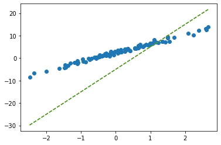
- step2
loss = torch.mean((y-yhat)**2)- step3
(미분전)
net.bias,net.weight(Parameter containing:
tensor([-5.], requires_grad=True),
Parameter containing:
tensor([[10.]], requires_grad=True))net.bias.grad, net.weight.grad(None, None)(미분)
loss.backward()(미분후)
net.bias,net.weight(Parameter containing:
tensor([-5.], requires_grad=True),
Parameter containing:
tensor([[10.]], requires_grad=True))net.bias.grad,net.weight.grad(tensor([-13.4225]), tensor([[11.8893]]))- step4
(업데이트전)
net.bias,net.weight(Parameter containing:
tensor([-5.], requires_grad=True),
Parameter containing:
tensor([[10.]], requires_grad=True))net.bias.grad, net.weight.grad(tensor([-13.4225]), tensor([[11.8893]]))(업데이트)
net.bias.data = net.bias.data - 0.1*net.bias.grad
net.weight.data = net.weight.data - 0.1*net.weight.grad net.bias.grad = None
net.weight.grad = None (업데이트후)
net.bias,net.weight(Parameter containing:
tensor([-3.6577], requires_grad=True),
Parameter containing:
tensor([[8.8111]], requires_grad=True))net.bias.grad, net.weight.grad(None, None)- 반복
net = torch.nn.Linear(1,1)
net.weight.data = torch.tensor([[10.0]])
net.bias.data = torch.tensor([-5.0])for epoc in range(30):
yhat = net(x)
loss = torch.mean((y-yhat)**2)
loss.backward()
net.weight.data = net.weight.data - 0.1*net.weight.grad
net.bias.data = net.bias.data - 0.1*net.bias.grad
net.weight.grad = None
net.bias.grad = Noneplt.plot(x,y,'o')
plt.plot(x,net(x).data,'--')
ver2: net = torch.nn.Linear(2,1,bias=False)
- 준비
net = torch.nn.Linear(2,1,bias=False)
net.weight.data = torch.tensor([[-5.0, 10.0]])- step1
yhat = net(X)- step2
loss = torch.mean((y-yhat)**2)- step3
(미분전)
net.weightParameter containing:
tensor([[-5., 10.]], requires_grad=True)net.weight.grad(미분)
loss.backward()(미분후)
net.weightParameter containing:
tensor([[-5., 10.]], requires_grad=True)net.weight.gradtensor([[-13.4225, 11.8893]])- step4
(업데이트전)
net.weightParameter containing:
tensor([[-5., 10.]], requires_grad=True)net.weight.gradtensor([[-13.4225, 11.8893]])(업데이트)
net.weight.data = net.weight.data - 0.1*net.weight.gradnet.weight.grad = None(업데이트후)
net.weightParameter containing:
tensor([[-3.6577, 8.8111]], requires_grad=True)net.weight.grad- 반복
net = torch.nn.Linear(2,1,bias=False)
net.weight.data = torch.tensor([[-5.0, 10.0]])plt.plot(x,y,'o')
plt.plot(x,net(X).data,'--')
for epoc in range(30):
yhat = net(X)
loss = torch.mean((y-yhat)**2)
loss.backward()
net.weight.data = net.weight.data - 0.1*net.weight.grad
net.weight.grad = Noneplt.plot(x,y,'o')
plt.plot(x,net(X).data,'--')
step4의 다른버전: 옵티마이저!
ver1: net = torch.nn.Linear(1,1,bias=True)
- 준비
net = torch.nn.Linear(1,1)
net.weight.data = torch.tensor([[10.0]])
net.bias.data = torch.tensor([[-5.0]]) torch.optim.SGD?Init signature: torch.optim.SGD( params, lr=<required parameter>, momentum=0, dampening=0, weight_decay=0, nesterov=False, ) Docstring: Implements stochastic gradient descent (optionally with momentum). .. math:: \begin{aligned} &\rule{110mm}{0.4pt} \\ &\textbf{input} : \gamma \text{ (lr)}, \: \theta_0 \text{ (params)}, \: f(\theta) \text{ (objective)}, \: \lambda \text{ (weight decay)}, \\ &\hspace{13mm} \:\mu \text{ (momentum)}, \:\tau \text{ (dampening)},\:nesterov\\[-1.ex] &\rule{110mm}{0.4pt} \\ &\textbf{for} \: t=1 \: \textbf{to} \: \ldots \: \textbf{do} \\ &\hspace{5mm}g_t \leftarrow \nabla_{\theta} f_t (\theta_{t-1}) \\ &\hspace{5mm}\textbf{if} \: \lambda \neq 0 \\ &\hspace{10mm} g_t \leftarrow g_t + \lambda \theta_{t-1} \\ &\hspace{5mm}\textbf{if} \: \mu \neq 0 \\ &\hspace{10mm}\textbf{if} \: t > 1 \\ &\hspace{15mm} \textbf{b}_t \leftarrow \mu \textbf{b}_{t-1} + (1-\tau) g_t \\ &\hspace{10mm}\textbf{else} \\ &\hspace{15mm} \textbf{b}_t \leftarrow g_t \\ &\hspace{10mm}\textbf{if} \: nesterov \\ &\hspace{15mm} g_t \leftarrow g_{t-1} + \mu \textbf{b}_t \\ &\hspace{10mm}\textbf{else} \\[-1.ex] &\hspace{15mm} g_t \leftarrow \textbf{b}_t \\ &\hspace{5mm}\theta_t \leftarrow \theta_{t-1} - \gamma g_t \\[-1.ex] &\rule{110mm}{0.4pt} \\[-1.ex] &\bf{return} \: \theta_t \\[-1.ex] &\rule{110mm}{0.4pt} \\[-1.ex] \end{aligned} Nesterov momentum is based on the formula from `On the importance of initialization and momentum in deep learning`__. Args: params (iterable): iterable of parameters to optimize or dicts defining parameter groups lr (float): learning rate momentum (float, optional): momentum factor (default: 0) weight_decay (float, optional): weight decay (L2 penalty) (default: 0) dampening (float, optional): dampening for momentum (default: 0) nesterov (bool, optional): enables Nesterov momentum (default: False) Example: >>> optimizer = torch.optim.SGD(model.parameters(), lr=0.1, momentum=0.9) >>> optimizer.zero_grad() >>> loss_fn(model(input), target).backward() >>> optimizer.step() __ http://www.cs.toronto.edu/%7Ehinton/absps/momentum.pdf .. note:: The implementation of SGD with Momentum/Nesterov subtly differs from Sutskever et. al. and implementations in some other frameworks. Considering the specific case of Momentum, the update can be written as .. math:: \begin{aligned} v_{t+1} & = \mu * v_{t} + g_{t+1}, \\ p_{t+1} & = p_{t} - \text{lr} * v_{t+1}, \end{aligned} where :math:`p`, :math:`g`, :math:`v` and :math:`\mu` denote the parameters, gradient, velocity, and momentum respectively. This is in contrast to Sutskever et. al. and other frameworks which employ an update of the form .. math:: \begin{aligned} v_{t+1} & = \mu * v_{t} + \text{lr} * g_{t+1}, \\ p_{t+1} & = p_{t} - v_{t+1}. \end{aligned} The Nesterov version is analogously modified. File: ~/anaconda3/envs/csy/lib/python3.8/site-packages/torch/optim/sgd.py Type: type Subclasses:
Stocastic Gradiant Decscent
net.parameters()<generator object Module.parameters at 0x7f5f0d522740>optimizr = torch.optim.SGD(net.parameters(),lr=1/10) - step1~3
yhat = net(x) loss = torch.mean((y-yhat)**2) loss.backward() - step4
(update 전)
net.weight.data, net.bias.data ## 값은 업데이트 전(tensor([[10.]]), tensor([[-5.]]))net.weight.grad, net.bias.grad ## 미분값은 청소전 (tensor([[11.8893]]), tensor([[-13.4225]]))(update)
optimizr.step()
optimizr.zero_grad() (update 후)
net.weight.data, net.bias.data ## 값은 업데이트 되었음 (tensor([[8.8111]]), tensor([[-3.6577]]))net.weight.grad, net.bias.grad ## 미분값은 0으로 초기화하였음 (tensor([[0.]]), tensor([[0.]]))- 반복
net = torch.nn.Linear(1,1)
net.weight.data = torch.tensor([[10.0]])
net.bias.data = torch.tensor([-5.0])
optimizr = torch.optim.SGD(net.parameters(),lr=1/10) plt.plot(x,y,'o')
plt.plot(x,net(x).data,'--')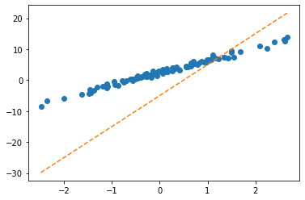
for epoc in range(30):
yhat = net(x)
loss = torch.mean((y-yhat)**2)
loss.backward()
optimizr.step(); optimizr.zero_grad() plt.plot(x,y,'o')
plt.plot(x,net(x).data,'--')
ver2: net = torch.nn.Linear(2,1,bias=False)
- 바로 반복하겠습니다..
net = torch.nn.Linear(2,1,bias=False)
net.weight.data = torch.tensor([[-5.0, 10.0]])
optimizr = torch.optim.SGD(net.parameters(),lr=1/10) plt.plot(x,y,'o')
plt.plot(x,net(X).data,'--')
for epoc in range(30):
yhat = net(X)
loss = torch.mean((y-yhat)**2)
loss.backward()
optimizr.step(); optimizr.zero_grad() plt.plot(x,y,'o')
plt.plot(x,net(X).data,'--')
Appendix: net.parameters()의 의미? (선택학습)
- iterator, generator의 개념필요 - https://guebin.github.io/IP2022/2022/06/06/(14주차)-6월6일.html, 클래스공부 8단계 참고
- 탐구시작: 네트워크 생성
net = torch.nn.Linear(in_features=1,out_features=1)
net.weightParameter containing:
tensor([[-0.4277]], requires_grad=True)net.biasParameter containing:
tensor([-0.0629], requires_grad=True)- torch.optim.SGD? 를 확인하면 params에 대한설명에 아래와 같이 되어있음
params (iterable): iterable of parameters to optimize or dicts defining
parameter groups- 설명을 읽어보면 params에 iterable object를 넣으라고 되어있음 (iterable object는 숨겨진 명령어로 __iter__를 가지고 있는 오브젝트를 의미)
set(dir(net.parameters)) & {'__iter__'}set()set(dir(net.parameters())) & {'__iter__'}{'__iter__'}- 무슨의미?
_generator = net.parameters()_generator.__next__()Parameter containing:
tensor([[-0.4277]], requires_grad=True)_generator.__next__()Parameter containing:
tensor([-0.0629], requires_grad=True)_generator.__next__()StopIteration: - 이건 이런느낌인데?
_generator2 = iter([net.weight,net.bias])_generator2<list_iterator at 0x7f5f0d2cdeb0>_generator2.__next__()Parameter containing:
tensor([[-0.4277]], requires_grad=True)_generator2.__next__()Parameter containing:
tensor([-0.0629], requires_grad=True)_generator2.__next__()StopIteration: - 즉 아래는 같은코드이다.
### 코드1
_generator = net.parameters()
torch.optim.SGD(_generator,lr=1/10)
### 코드2
_generator = iter([net.weight,net.bias])
torch.optim.SGD(_generator,lr=1/10)
### 코드3 (이렇게 써도 코드2가 실행된다고 이해할 수 있음)
_iterator = [net.weight,net.bias]
torch.optim.SGD(_iterator,lr=1/10) 결론: net.parameters()는 net오브젝트에서 학습할 파라메터를 모두 모아 리스트(iterable object)로 만드는 함수라 이해할 수 있다.
- 응용예제1
What = torch.tensor([[-5.0],[10.0]],requires_grad=True)
optimizr = torch.optim.SGD([What],lr=1/10) plt.plot(x,y,'o')
plt.plot(x,(X@What).data,'--')
for epoc in range(30):
yhat = X@What
loss = torch.mean((y-yhat)**2)
loss.backward()
optimizr.step();optimizr.zero_grad() plt.plot(x,y,'o')
plt.plot(x,(X@What).data,'--')
- 응용예제2
b = torch.tensor(-5.0,requires_grad=True)
w = torch.tensor(10.0,requires_grad=True)
optimizr = torch.optim.SGD([b,w],lr=1/10)plt.plot(x,y,'o')
plt.plot(x,(w*x+b).data,'--')for epoc in range(30):
yhat = b+ w*x
loss = torch.mean((y-yhat)**2)
loss.backward()
optimizr.step(); optimizr.zero_grad()plt.plot(x,y,'o')
plt.plot(x,(w*x+b).data,'--')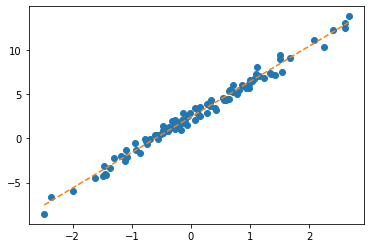
Logistic regression
motive
- 현실에서 이런 경우가 많음 - \(x\)가 커질수록 (혹은 작아질수록) 성공확률이 증가함.
- (X,y)는 어떤모양?
_df = pd.DataFrame({'x':range(-6,7),'y':[0,0,0,0,0,0,1,0,1,1,1,1,1]})
_df | x | y | |
|---|---|---|
| 0 | -6 | 0 |
| 1 | -5 | 0 |
| 2 | -4 | 0 |
| 3 | -3 | 0 |
| 4 | -2 | 0 |
| 5 | -1 | 0 |
| 6 | 0 | 1 |
| 7 | 1 | 0 |
| 8 | 2 | 1 |
| 9 | 3 | 1 |
| 10 | 4 | 1 |
| 11 | 5 | 1 |
| 12 | 6 | 1 |
plt.plot(_df.x,_df.y,'o')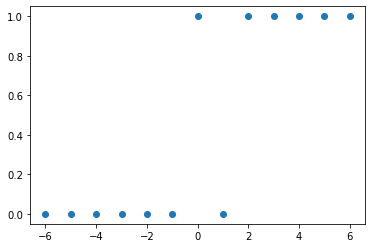
- (예비학습) 시그모이드라는 함수가 있음
xx = torch.linspace(-6,6,100)
def f(x):
return torch.exp(x)/(1+torch.exp(x))plt.plot(_df.x,_df.y,'o')
plt.plot(xx,f(xx))
plt.plot(xx,f(2.5*xx-1.2)) # 영향을 크게 받을 때 + 운적인 요소 영향 받을 때(절편) -> 모델링하는 과정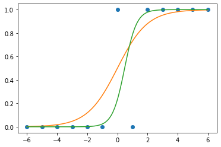
베르누이 특정 확률로 0 또는 1 뽑기
model
- \(x\)가 커질수록 \(y=1\)이 잘나오는 모형은 아래와 같이 설계할 수 있음 <— 외우세요!!!
$y_i Ber(_i),$ where \(\pi_i = \frac{\exp(w_0+w_1x_i)}{1+\exp(w_0+w_1x_i)}\)
\(\hat{y}_i= \hat{pi}_\frac{\exp(\hat{w}_0+\hat{w}_1x_i)}{1+\exp(\hat{w}_0+\hat{w}_1x_i)}=\frac{1}{1+\exp(-\hat{w}_0-\hat{w}_1x_i)}\)
\(loss= - \sum_{i=1}^{n} \big(y_i\log(\hat{y}_i)+(1-y_i)\log(1-\hat{y}_i)\big)\) <— 외우세요!!
\(y_i=1\) \(\hat{y_i} = 1\)loss가 0 근처 \(\hat{y_i} = 0\) loss가- 무한대
\(y_i = 0\) $ = 0 $loss가 0근처 \(\hat{y_i} = 1\) loss가 1
toy example
- 예제시작
torch.bernoulli?Docstring: bernoulli(input, *, generator=None, out=None) -> Tensor Draws binary random numbers (0 or 1) from a Bernoulli distribution. The :attr:`input` tensor should be a tensor containing probabilities to be used for drawing the binary random number. Hence, all values in :attr:`input` have to be in the range: :math:`0 \leq \text{input}_i \leq 1`. The :math:`\text{i}^{th}` element of the output tensor will draw a value :math:`1` according to the :math:`\text{i}^{th}` probability value given in :attr:`input`. .. math:: \text{out}_{i} \sim \mathrm{Bernoulli}(p = \text{input}_{i}) The returned :attr:`out` tensor only has values 0 or 1 and is of the same shape as :attr:`input`. :attr:`out` can have integral ``dtype``, but :attr:`input` must have floating point ``dtype``. Args: input (Tensor): the input tensor of probability values for the Bernoulli distribution Keyword args: generator (:class:`torch.Generator`, optional): a pseudorandom number generator for sampling out (Tensor, optional): the output tensor. Example:: >>> a = torch.empty(3, 3).uniform_(0, 1) # generate a uniform random matrix with range [0, 1] >>> a tensor([[ 0.1737, 0.0950, 0.3609], [ 0.7148, 0.0289, 0.2676], [ 0.9456, 0.8937, 0.7202]]) >>> torch.bernoulli(a) tensor([[ 1., 0., 0.], [ 0., 0., 0.], [ 1., 1., 1.]]) >>> a = torch.ones(3, 3) # probability of drawing "1" is 1 >>> torch.bernoulli(a) tensor([[ 1., 1., 1.], [ 1., 1., 1.], [ 1., 1., 1.]]) >>> a = torch.zeros(3, 3) # probability of drawing "1" is 0 >>> torch.bernoulli(a) tensor([[ 0., 0., 0.], [ 0., 0., 0.], [ 0., 0., 0.]]) Type: builtin_function_or_method
torch.bernoulli(torch.tensor([0.5]*100)) # 0.5의 확률ㄹ 0 또는 1 뽑아tensor([0., 1., 0., 1., 0., 0., 1., 0., 0., 0., 0., 1., 0., 1., 1., 0., 1., 1.,
0., 0., 0., 0., 0., 1., 0., 1., 0., 1., 1., 0., 1., 0., 1., 0., 0., 1.,
1., 1., 0., 1., 0., 1., 0., 0., 1., 1., 0., 1., 0., 0., 0., 1., 1., 0.,
1., 0., 0., 0., 0., 0., 0., 1., 0., 0., 0., 0., 1., 1., 1., 0., 0., 0.,
0., 1., 1., 1., 0., 1., 1., 0., 1., 0., 1., 1., 0., 0., 0., 1., 0., 1.,
1., 1., 0., 1., 1., 0., 1., 0., 0., 1.])x=torch.linspace(-1,1,2000).reshape(2000,1)
w0= -1
w1= 5
u = w0+x*w1
v = torch.exp(u)/(1+torch.exp(u)) # v=πi, 즉 확률을 의미함
y = torch.bernoulli(v) vtensor([[0.0025],
[0.0025],
[0.0025],
...,
[0.9818],
[0.9819],
[0.9820]])utensor([[-6.0000],
[-5.9950],
[-5.9900],
...,
[ 3.9900],
[ 3.9950],
[ 4.0000]])#plt.scatter(x,y,alpha=0.05)
plt.plot(x,y,'o',alpha=0.05,ms=4)
plt.plot(x,v,'--r')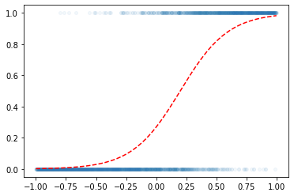
- 우리의 목적: \(x\)가 들어가면 빨간선 \(\hat{y}\)의 값을 만들어주는 mapping을 학습해보자.
w0hat = 10
w1hat = 3
yhat = f(w0hat + w1hat*x)
plt.plot(x,y,'o',alpha=0.05,ms=4)
plt.plot(x,v,'--r')
plt.plot(x,yhat,'--r')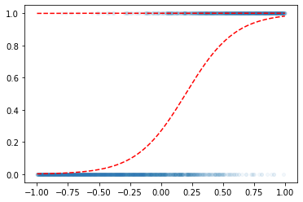
l1 = torch.nn.Linear(1,1)l1.bias.data = torch.tensor([-1.0])
l1.weight.data = torch.tensor([[1.0]])a1 = torch.nn.Sigmoid()w0hat = -1
w1hat = 3
yhat = a1(w0hat + w1hat*x)
plt.plot(x,y,'o',alpha=0.05,ms=4)
plt.plot(x,v,'--r')
plt.plot(x,yhat,'--r')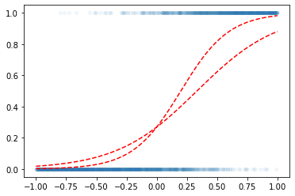
for epoc in range(6000):
## step1
yhat = a1(l1(x))
## step2
loss = torch.mean((y-yhat)**2) ## loss 를 원래 이렇게 하는건 아니에요..
## step3
loss.backward()
## step4
l1.bias.data = l1.bias.data - 0.1 * l1.bias.grad
l1.weight.data = l1.weight.data - 0.1 * l1.weight.grad
l1.bias.grad = None
l1.weight.grad = None plt.plot(x,y,'o',alpha=0.05,ms=4)
plt.plot(x,v,'--r')
plt.plot(x,a1(l1(x)).data,'--r')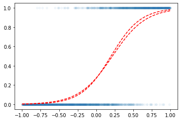